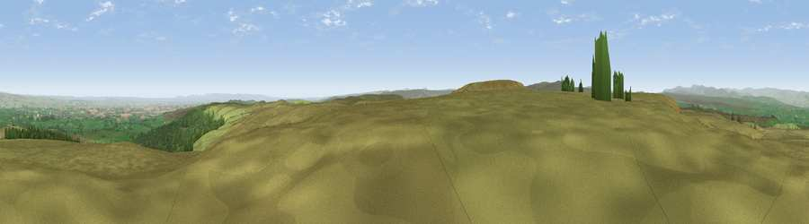

Viewpoint c10154_8017
#5407 in England · top 5% of its area beats it · —The view, rendered

A 360° render of this exact spot computed from the terrain model, tree cover and land cover — summer colours, afternoon light, calibrated against photographs of famous viewpoints. Real trees, hedges and buildings will differ in detail.
The panorama
Grey silhouette: terrain skyline in each direction (720 bearings, Earth curvature and refraction included). Dashed green: skyline with trees (+15 m) and buildings (+8 m) as obstacles. Blue strip: how far the ground is visible on each bearing.
Where the view opens
Wedge length = distance to the farthest visible ground on that bearing (vegetation-aware). Rings at 10, 25 and 50 km.
What fills the view
86% grassland · 8% woodland · 5% cropland ·
Angular shares of the visible panorama (visual magnitude), not map area. Landscape diversity 0.23 (0–1 Shannon).
Key numbers
More beautiful places nearby
The staircase of upgrades: each row has a higher view potential than everything closer. Driving times are estimates from straight-line distance, calibrated against real road routing — check an actual route before setting out.
| Place | Direction | Drive | Score |
|---|---|---|---|
| Viewpoint near Barningham | E · 2 km | ~6 min | 74.1 |
| Viewpoint near Eggleston | N · 16 km | ~29 min | 76.0 |
| Viewpoint c10024_7603 | WSW · 22 km | ~36 min | 76.9 |
| Viewpoint near East Witton | SSE · 26 km | ~42 min | 77.8 |
| Calders | WSW · 36 km | ~54 min | 79.0 |
| Whernside | SW · 37 km | ~56 min | 79.9 |
| Beacon Hill | E · 46 km | ~66 min | 84.7 |
| Carlton Bank | E · 51 km | ~72 min | 85.1 |
54.46535, -1.98724 · source: screening · position refined by local search. Computed location — check access rights before visiting.